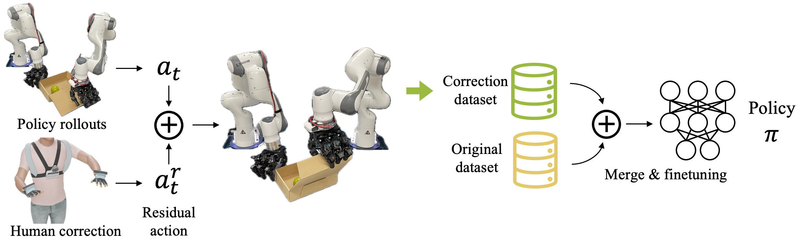

Imitation learning from human hand motion data presents a promising avenue for imbuing robots with human-like dexterity in real-world manipulation tasks.
Despite this potential, substantial challenges persist. These include the portability of existing hand motion capture (mocap) systems and the complexity of translating mocap data into effective robotic policies.
To tackle these issues, we introduce DexCap, a portable hand motion capture system. Alongside DexCap, we present DexIL, a novel imitation algorithm for training dexterous robot skills directly from human hand mocap data.
DexCap offers precise, occlusion-resistant tracking of wrist and finger motions. It does this based on SLAM and electromagnetic fields, together with 3D observations of the environment.
Utilizing this rich dataset, DexIL employs inverse kinematics and point cloud-based imitation learning to seamlessly replicate human actions with robot hands.
Beyond direct learning from human motion, DexCap also offers an optional human-in-the-loop correction mechanism. This occurs during policy rollouts to refine and further improve robot performance with minimal human effort.
Through extensive evaluation across six challenging dexterous manipulation tasks, our approach not only demonstrates superior performance. It also showcases the system's capability to effectively learn from in-the-wild mocap data.
This paves the way for future data collection methods in the pursuit of human-level robot dexterity.
DexCap: A Portable Hand Motion Capture System
Overview of the DexCap system:
Front design: A camera rack on the chest is equipped with an RGB-D LiDAR camera and three SLAM tracking cameras.
Back design: A mini-PC and power bank in the backpack power the system for approximately 40 minutes of data collection.
Data collection process: The tracking cameras, initially placed in the camera rack for calibration,
are relocated to hand mounts during data collection to consistently track the palm positions.
Finger motions are captured by motion capture gloves.
From Human to Robot
Observation retargeting: To simplify the process of switching the camera system between the human and robot,
a quick-release buckle has been integrated into the back of the camera rack, allowing for swift camera swaps
– in less than 20 seconds. In this way, the robot utilizes the same observation camera employed during human data collection.
Action retargeting: To transfer human finger motion to the LEAP robot hand, we use fingertip
inverse kinematics (IK) to compute the 16-dimensional joint positions. Human finger motions are tracked
using a pair of motion capture gloves, which measure the 3D positions of the fingers relative to the palm based on electromagnetic field (EMF).
Method: Data Retargeting and Imitation Learning
We first retarget the DexCap data to the robot embodiment by constructing 3D point clouds from RGB-D observations and transforming it into robot operation space.
Meanwhile, the hand motion capture data is retargeted to the dexterous hand and robot arm with fingertip IK.
Based on the data, a Diffusion Policy is learned to take the point cloud as input and outputs a sequence of future goal positions as the robot actions.
Results
Fully autonomous policy rollouts. Policy learned with 30-minute human mocap data without any teleoperation.
Bimanual Manipulation Task
0:00-0:09 Collecting bimanual human mocap data 0:10-1:47 Fully autonomous policy rollouts (learned with 30-minute human mocap data without any teleoperation)
In-the-wild Data Collection with DexCap
Policy learned with In-the-wild DexCap Data
Trained objects: Fully autonomous policy rollouts in 1x speed.
Unseen objects:. Fully autonomous policy rollouts in 1x speed.
Human-in-the-loop correction with DexCap
DexCap supports two types of human-in-the-loop correction during the policy rollouts: (1). Residual correction measures the 3D delta position changes of the human wrist and incorporates them as residual actions to the robot's wrist movements.
This mode enables minimal movement but requiring more precise control. (2). Teleoperation directly translates full human hand motions to the robot end-effector actions based on inverse kinematics.
This mode enables the full control over the robot but requiring more effort.
Users can switch between the two modes by stepping on the foot pedal during the rollouts.

The corrections are stored in a new dataset and uniformly sampled with the original dataset for fine-tuning the robot policy
Results after finetuning - Tea preparing
Fully autonomous policy rollouts in 2x speed. Policy learned with 1-hour human mocap data and 30 human-in-the-loop corrections.
Results after finetuning - Scissor cutting
Fully autonomous policy rollouts in 2x speed. Policy learned with 1-hour human mocap data and 30 human-in-the-loop corrections.